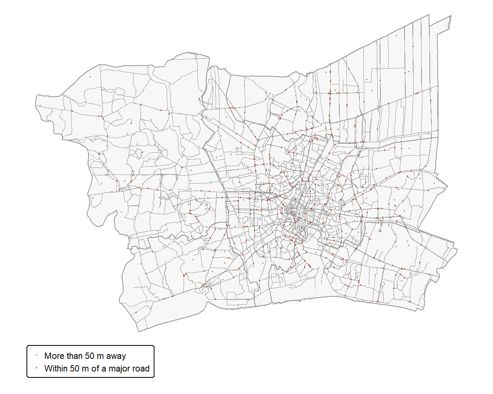
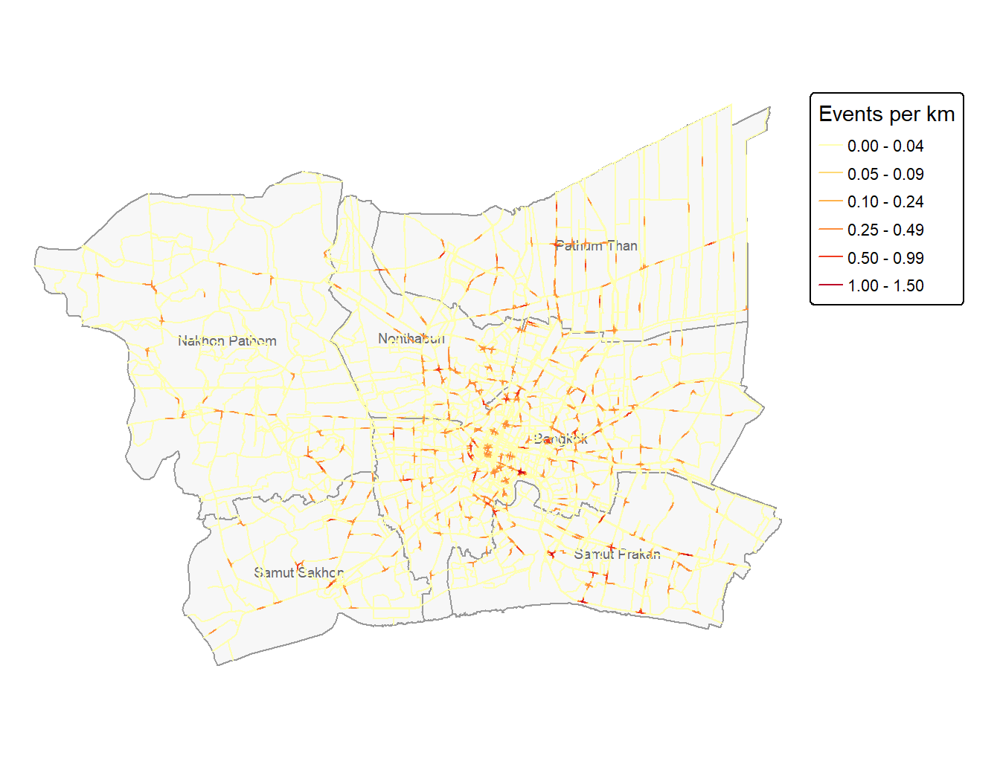
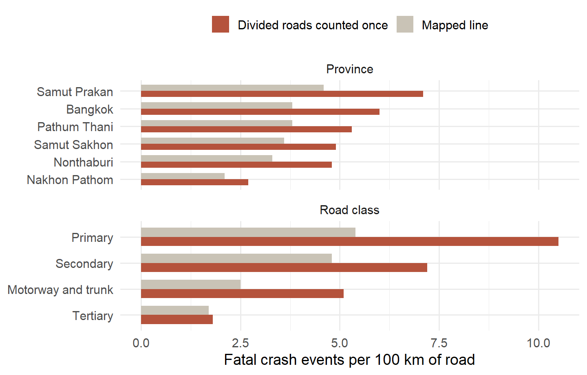
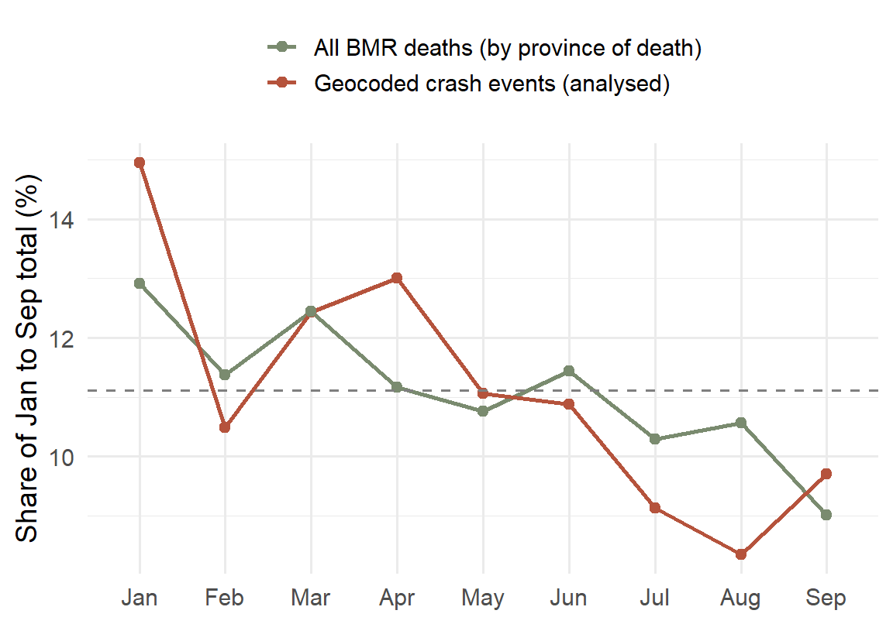
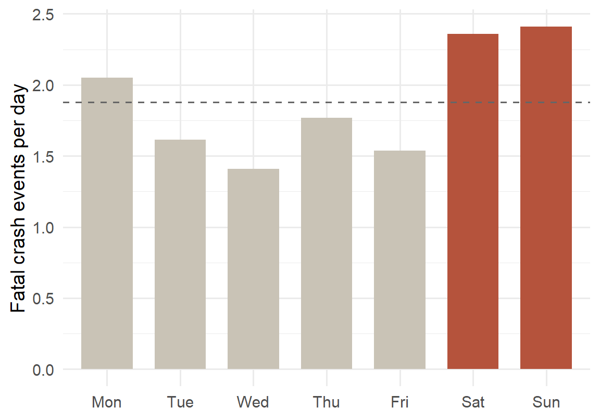
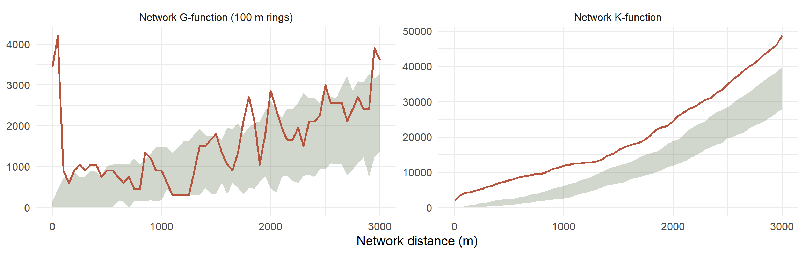
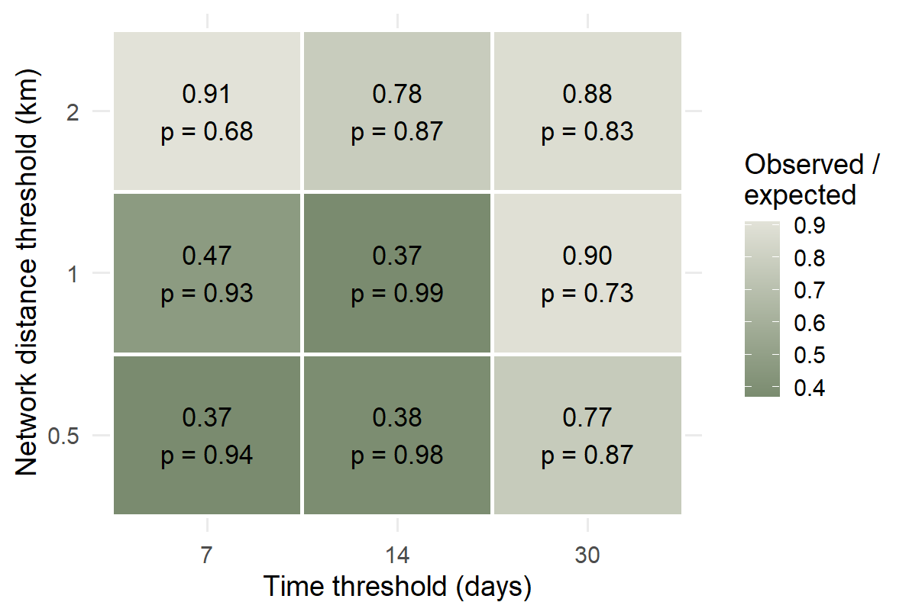

Take-home Exercise 1 · Executive Summary
2026-09-27
spNetwork.
| Step | n |
|---|---|
| Deaths recorded in Thailand | 12,762 |
| After removing duplicates | 12,738 |
| With crash coordinates | 3,240 |
| Inside the BMR | 530 |
| Crash events (deaths merged) | 515 |
| Within 50 m of a major road | 374 |
Fatalities from Kaggle (Department of Disease Control), province boundaries from geoBoundaries and 10,489 km of major roads from OpenStreetMap.
36%
of BMR deaths have crash coordinates
16 of 586
deaths with no recorded vehicle are geocoded
97.1%
of geocoded deaths are motorcyclists
The maps describe fatal motorcycle crashes with a recorded location on major roads, which is 374 of the 515 geocoded crash events.
| Question | Method | Key settings | Compared with |
|---|---|---|---|
| Where do crashes concentrate | Network kernel density (NKDE) | Quartic kernel, simple method, 1 km bandwidth, 200 m lixels, 500 m and 2 km for sensitivity | Other bandwidths |
| How intensity varies by road | Crashes per 100 km of road | Road class and province, divided roads counted once and twice | Network length |
| Do crashes cluster | Network K- and G-functions | 0 to 3 km, 100 m rings, 49 simulations | Random placement along the network |
| Do nearby crashes bunch in time | Knox test on network distance | 0.5 to 2 km, 7 to 30 days, 999 permutations | Dates shuffled among events |

The simple method loses about 27% of the kernel mass, more near the boundary, so values are relative.

Rates are per km of road. Without traffic volumes they do not measure risk per trip.


The weekend daily rate is 1.42 times the weekday rate (chi-square p = 0.0029). Crashes peak in Jan and drift down through the year, with the same shape in the geocoded subset and in all deaths.

Random placement treats every km of road as equal, so part of this excess reflects uneven intensity along roads.

Crashes near each other on the road are spread over the months, which fits persistent crash sites and argues against short bursts.
What the evidence supports
Where the evidence stops
Geospatial Analytics · Take-home Exercise 1 · Road traffic fatalities in the BMR, 2024